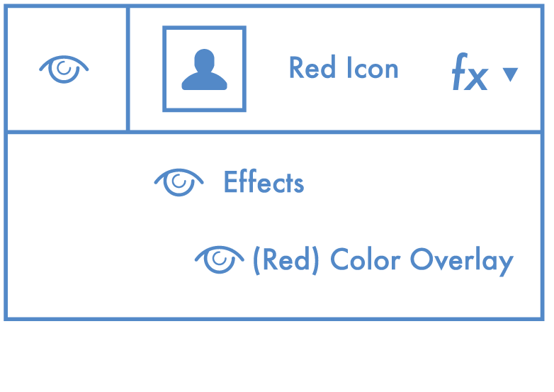

特效
即使是最好的设计师也会在应用效果时感到烦恼，这里不是要限制你去选择使用效果, 而是怎样正确地添加效果。
适当使用颜色叠加
把这个蓝色的形状图层加一个红色叠加？（最好是直接通过双击方块更改颜色，而不是再次进行颜色叠加）i

即使是最好的设计师也会在应用效果时感到烦恼，这里不是要限制你去选择使用效果, 而是怎样正确地添加效果。
把这个蓝色的形状图层加一个红色叠加？（最好是直接通过双击方块更改颜色，而不是再次进行颜色叠加）i